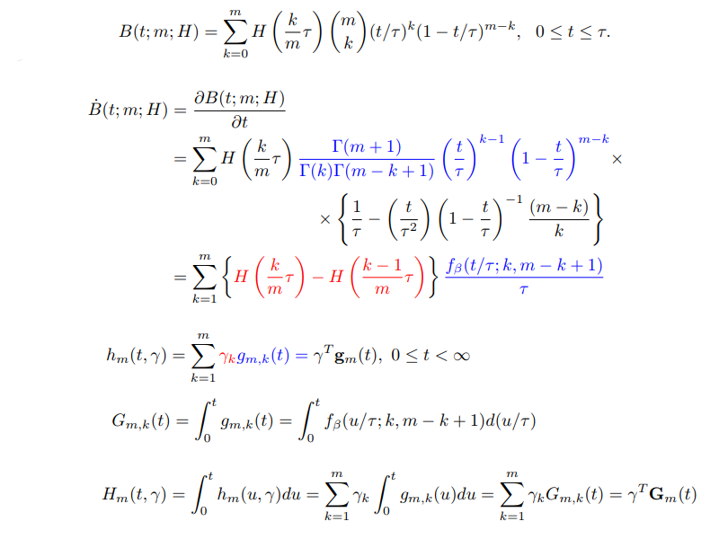
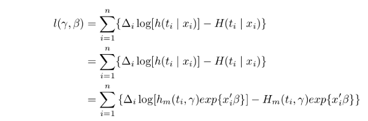
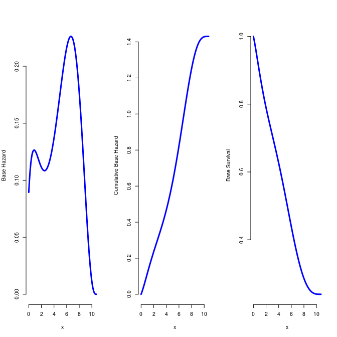
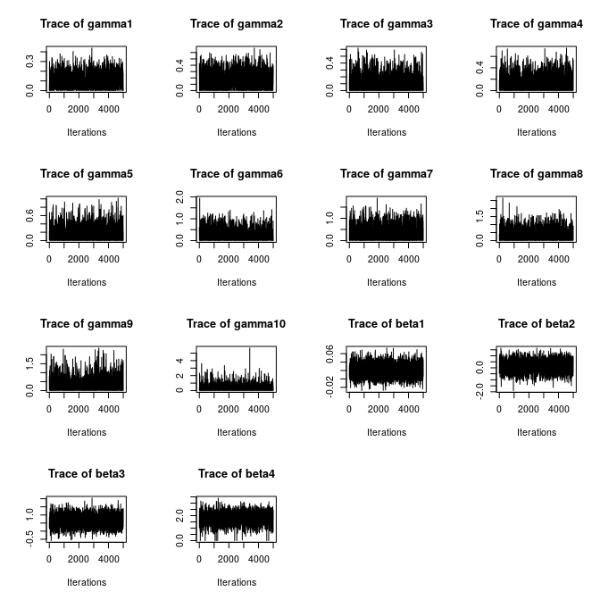
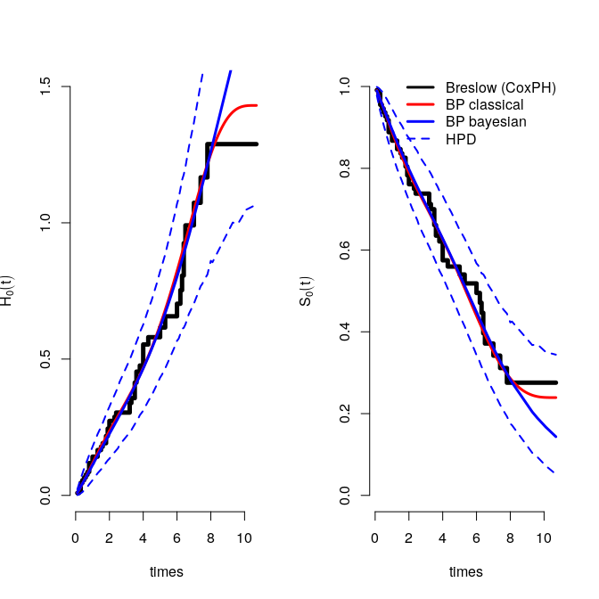
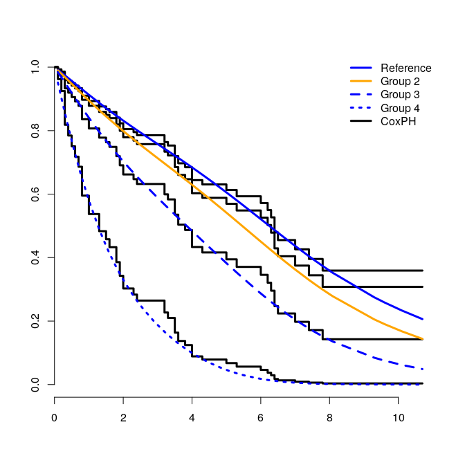
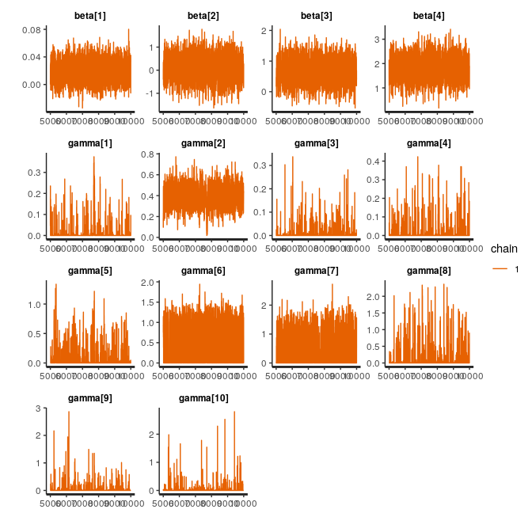

phbp project aims to present base risk estimate and related functions based on Proportional Hazards Models using Bernstein Polynomials (BP). For this, a demo was made making use of larynx dataset available at KMSurv Rpackage. Most relevent results were briefly explained and displayed throughout this text.
Cox Proportional Hazards (PH) model (partial likelihood)
First, we fitted gold standard Cox model. Due to avoid overflow in the argument to the exponential function, centered but not scaled data were used, these actions do lead to numerical stability as mentioned at survival Rpackage details. For more about proportional hazards models see Klein and Moeschberger(2006).
larynx$age <- scale(larynx$age, scale = F)
larynx$stage2 = scale(as.numeric(larynx$stage == 2), scale = F)
larynx$stage3 = scale(as.numeric(larynx$stage == 3), scale = F)
larynx$stage4 = scale(as.numeric(larynx$stage == 4), scale = F)
## [1] "env0"
## character(0)
## [1] "survival" "KMsurv"
| coef | exp(coef) | se(coef) | z | p | |
|---|---|---|---|---|---|
| age | 0.01903 | 1.019 | 0.01426 | 1.335 | 0.182 |
| stage2 | 0.14 | 1.15 | 0.4625 | 0.3028 | 0.762 |
| stage3 | 0.6424 | 1.901 | 0.3561 | 1.804 | 0.07125 |
| stage4 | 1.706 | 5.507 | 0.4219 | 4.043 | 0.00005267 |
Likelihood ratio test=18.31 on 4 df, p=0.001072 n= 90, number of events= 50
Bernstein polynomials and Log-likelihood function
BP is often used to aproximate functions in close intervals $[a,b]$, according to Osman and Gosh (2012), it can be used as well to approximate cumulative hazard functions in $[0, \tau ]$, such that $\tau$ is the time which there is no more survivers, i.e. we assume no cure fraction.
Basic notations, see Osman and Gosh (2012) for more:

B is the polynomial that approximates the cumulative risk function. It is well known that partial (dot over B) gives us the risk function, see Klein and Moeschberger(2006).
Quantities in red appeared after applying derivate w/ respect to t. Note that those are given according to the summation index k and from here and forth are parameters to be estimated. In blue there is a beta density over $\tau$ evaluated at $t/ \tau$ , denoted by g.
Getting H back consists of accumulating hazard function $h()$ from 0 to t. This ends up following beta cumulative density eval at $t/ \tau$, after a rearrangement trick.
We used b and B for polynomials basis instead of g and G on code.
function (time, m = 0, tau = 0)
{
n <- length(time)
if (sum(time >= 0) != n | m < 0 | tau < 0) {
return(NA)
break
}
if (tau == 0) {
tau <- max(time)
}
if (m == 0) {
m <- ceiling(sqrt(length(time)))
}
k <- 1:m
b <- matrix(NA, n, m)
B <- matrix(NA, n, m)
y <- time/tau
for (i in 1:n) {
for (k in 1:m) {
b[i, k] <- dbeta(y[i], k, m - k + 1)/tau
B[i, k] <- pbeta(y[i], k, m - k + 1)
}
}
return(list(b = b, B = B, m = m, tau = tau))
}
Above one could use sapply function instead of nested for loops. However, I opted to make a more intelligible code. Unlike the Cox model, the proposed approach does not use partial likelihood.

function (par, m, delta, Z, b, B)
{
gamma <- abs(matrix(par[1:m], ncol = 1))
beta <- matrix(par[(m + 1):(m + q)], ncol = 1)
q <- length(par) - m
eta <- Z %*% beta
h <- b %*% gamma
H <- B %*% gamma
res <- sum(delta * log(h * exp(eta)) - H * exp(eta))
return(res)
}
Classical inference was made using BFGS numeric optimization to find the argument (gamma, beta) that maximizes log-likelihood.
Proportional hazards model related functions using BP
Curves derived from gamma vector estimates obtained with clas$par.

Bayesian Approach
Bayesian inference wasn’t as straight forward as using numerical methods already implemented in R. But it was elegantly done based on gibbs sampling and Adaptive Rejection Metropolis Sampling (ARMS) algorithm. In general, after sampling directly from posterior distribution, Bayesian estimators are calculated for each iteration risk curve.
However, when sampling from multivariate posterior is not possible, it is usual to sample from posterior conditionals distributions on Gibbs sampling. Even if sampling from conditionals is not possible, there are some alternatives, we recurred to Adaptive Rejection Metropolis Sampling (ARMS) within Gibbs. One can’t know, but ARMS requires a grid delimiting the aimed density support, we used HI package arms function and Jacobian variable transformation to push all variables in [0,1]. See whole Rscript at gibbs.R repository file.
# priors parameters (hyperparameters)
a_gammak = .01
b_gammak = .01
a_gammak / b_gammak
## [1] 1
a_gammak / (b_gammak)^2
## [1] 100
m_beta <- rep(0, q)
S_beta <- diag(100, q, q)
it <- 1e4
begtime <- Sys.time()
source("gibbs.R")
library(coda)
Sys.time() - begtime
## Time difference of 58.96 secs
burnin <- .5 * it
par_mcmc <- as.mcmc(par_samp[burnin:it, ])
par(mfrow = c(4,4))
traceplot(par_mcmc)
par(mfrow = c(4,4))

Estimates using BP
| lower | upper | mean | median | SD | ||
|---|---|---|---|---|---|---|
| gamma1 | 0.09565 | 0 | 0.2332 | 0.1069 | 0.1018 | 0.0732 |
| gamma2 | -0.236 | 0 | 0.3944 | 0.159 | 0.1374 | 0.133 |
| gamma3 | 0.000006972 | 0 | 0.3095 | 0.088 | 0.0441 | 0.1045 |
| gamma4 | 0.07928 | 0 | 0.3754 | 0.1042 | 0.0505 | 0.1239 |
| gamma5 | 0.2653 | 0 | 0.4719 | 0.1412 | 0.0779 | 0.1581 |
| gamma6 | 0.00003381 | 0 | 0.727 | 0.2322 | 0.1412 | 0.2434 |
| gamma7 | 0.7544 | 0 | 0.8949 | 0.2924 | 0.1966 | 0.2875 |
| gamma8 | 0.00001158 | 0 | 0.9374 | 0.2941 | 0.1854 | 0.3083 |
| gamma9 | -0.000005073 | 0 | 0.8511 | 0.2468 | 0.145 | 0.2968 |
| gamma10 | 0.000002499 | 0 | 0.9865 | 0.2772 | 0.1564 | 0.3613 |
| beta1 | 0.01927 | -0.008 | 0.0468 | 0.0201 | 0.0198 | 0.0141 |
| beta2 | 0.1719 | -0.7233 | 1.071 | 0.159 | 0.1702 | 0.4553 |
| beta3 | 0.6585 | -0.0427 | 1.309 | 0.6505 | 0.6472 | 0.3449 |
| beta4 | 1.799 | 0.9948 | 2.668 | 1.795 | 1.805 | 0.4319 |
Base cumulative risk and base survival curves

Survival curves by groups for a given 77 years old patient

Bayesian using Rstan (No-U-Turn Sampler)
Stan is a state-of-the-art platform for statistical modeling, an alternative to Gibbs Sampling seen above.
# Clear the R workspace and load rstan. # rm(list=ls(all=TRUE))
library(rstan)
# avoid recompilations
rstan_options(auto_write = TRUE)
# run different chains in parallel.
options(mc.cores = parallel::detectCores())
# Prepare data for Stan
data = list(n = n, m = m, q = q, delta = larynx$delta,
Z = Z, B = base$B, b = base$b,
a_gammak = a_gammak, b_gammak = b_gammak,
m_beta = m_beta[1], S_beta = S_beta[1])
pars = c("beta","gamma")
initvals = "random"
iter = it # total iterations (including warm-up).
warmup = it * .5
chains = 1
begtime <- Sys.time()
output = stan(file = "bern.stan", data=data,
iter=iter, warmup=warmup, chains=chains,
pars=pars, init=initvals, verbose=FALSE)
##
## SAMPLING FOR MODEL 'bern' NOW (CHAIN 1).
## Chain 1:
## Chain 1: Gradient evaluation took 5.1e-05 seconds
## Chain 1: 1000 transitions using 10 leapfrog steps per transition would take 0.51 seconds.
## Chain 1: Adjust your expectations accordingly!
## Chain 1:
## Chain 1:
## Chain 1: Iteration: 1 / 10000 [ 0%] (Warmup)
## Chain 1: Iteration: 1000 / 10000 [ 10%] (Warmup)
## Chain 1: Iteration: 2000 / 10000 [ 20%] (Warmup)
## Chain 1: Iteration: 3000 / 10000 [ 30%] (Warmup)
## Chain 1: Iteration: 4000 / 10000 [ 40%] (Warmup)
## Chain 1: Iteration: 5000 / 10000 [ 50%] (Warmup)
## Chain 1: Iteration: 5001 / 10000 [ 50%] (Sampling)
## Chain 1: Iteration: 6000 / 10000 [ 60%] (Sampling)
## Chain 1: Iteration: 7000 / 10000 [ 70%] (Sampling)
## Chain 1: Iteration: 8000 / 10000 [ 80%] (Sampling)
## Chain 1: Iteration: 9000 / 10000 [ 90%] (Sampling)
## Chain 1: Iteration: 10000 / 10000 [100%] (Sampling)
## Chain 1:
## Chain 1: Elapsed Time: 98.5036 seconds (Warm-up)
## Chain 1: 138.742 seconds (Sampling)
## Chain 1: 237.245 seconds (Total)
## Chain 1:
Sys.time()-begtime
## Time difference of 3.981 mins
traceplot(output, pars=c("beta","gamma"))

| lower | upper | mean | median | SD | ||
|---|---|---|---|---|---|---|
| gamma1 | 0.09565 | 0 | 0.0725 | 0.0087 | 0 | 0.0341 |
| gamma2 | -0.236 | 0.1786 | 0.5698 | 0.3782 | 0.38 | 0.0996 |
| gamma3 | 0.000006972 | 0 | 0.0014 | 0.0022 | 0 | 0.0171 |
| gamma4 | 0.07928 | 0 | 0.003 | 0.0041 | 0 | 0.0269 |
| gamma5 | 0.2653 | 0 | 0.1752 | 0.0294 | 0 | 0.1303 |
| gamma6 | 0.00003381 | 0 | 1.183 | 0.5155 | 0.6279 | 0.4486 |
| gamma7 | 0.7544 | 0 | 1.412 | 0.3649 | 0 | 0.5334 |
| gamma8 | 0.00001158 | 0 | 0.0965 | 0.0437 | 0 | 0.2267 |
| gamma9 | -0.000005073 | 0 | 0.0047 | 0.0123 | 0 | 0.1016 |
| gamma10 | 0.000002499 | 0 | 0.0046 | 0.0109 | 0 | 0.1031 |
| beta1 | 0.01927 | -0.0074 | 0.0483 | 0.0193 | 0.0192 | 0.0142 |
| beta2 | 0.1719 | -0.8207 | 1.054 | 0.1133 | 0.1259 | 0.482 |
| beta3 | 0.6585 | 0.015 | 1.415 | 0.6704 | 0.6643 | 0.3555 |
| beta4 | 1.799 | 0.9267 | 2.647 | 1.808 | 1.815 | 0.4369 |
Future Work
Investigate and deal with suspicion of cure fraction present in dataset and explore the use of BP for Cox model extensions. In addition to that, a Rpackage will be released to wrap a wide variety of survival models using BP by the end of the year as part of my MSc final project.
References
Giolo, S. R., & Colosimo, E. A. (2006). Análise de sobrevivência aplicada. Edgard Blucher.
Ibrahim, J. G., Chen, M. H., & Sinha, D. (2001). Bayesian survival analysis. Springer Science & Business Media.
Klein, J. P., & Moeschberger, M. L. (2006). Survival analysis: techniques for censored and truncated data. Springer Science & Business Media.
Lorentz, G. G. (2012). Bernstein polynomials. American Mathematical Soc..
Osman, M., & Ghosh, S. K. (2012). Nonparametric regression models for right-censored data using Bernstein polynomials. Computational Statistics & Data Analysis, 56(3), 559-573.